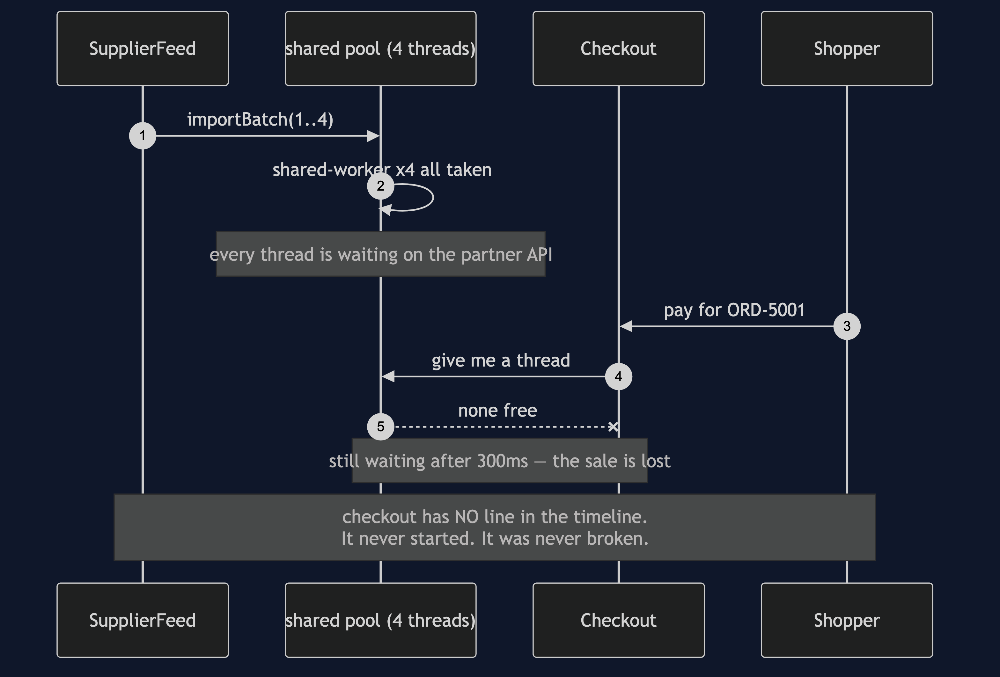
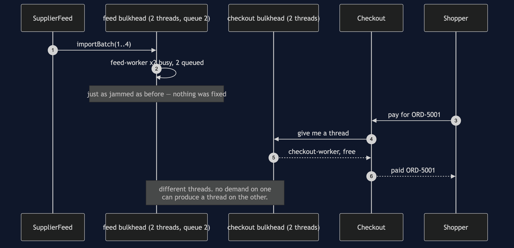
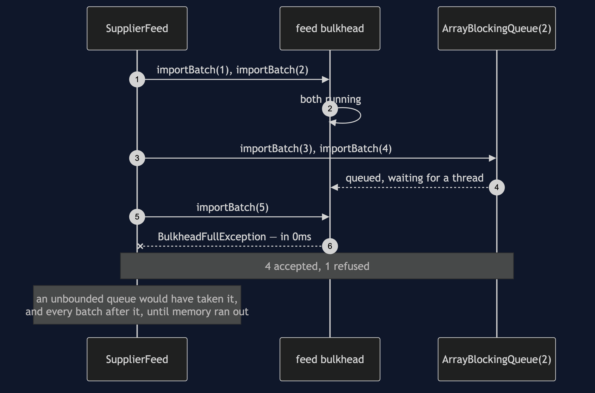
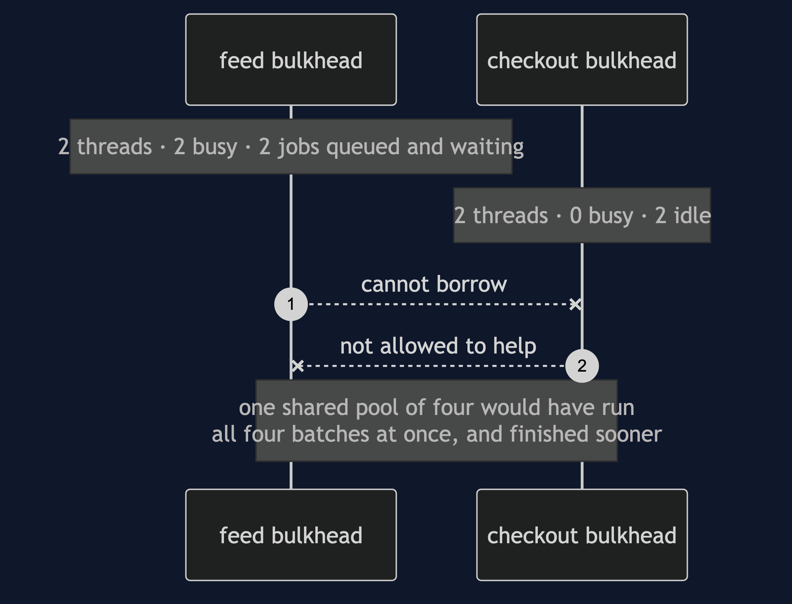

Bulkhead — UML Sequence Diagrams
Four sequences over the same outage. Throughout, the partner API is slow — it answers eventually, it just does not answer now — and a job waiting on it holds its thread. Every line below comes out of ./gradlew run.
Act One: One Shared Pool Of Four

Four batches take four threads and hold them. Checkout asks for a thread and there is not one.
The line to stare at is the note at the bottom. In the real timeline, checkout does not appear at all — not as an error, not as a slow entry, not as anything. Absence is the symptom, which is precisely why this is so hard to diagnose while it is happening: there is nothing in the logs to read.
theStarvedCheckoutWasNeverBroken runs that same checkout job the instant a thread is free and watches it succeed. Starved and broken look identical from outside, and only one of them can be fixed in the code.
Act Two: Two Bulkheads

Same slow partner, same four batches, same instant. Checkout completes in milliseconds.
The claim worth being careful about is not that checkout worked — it is that the feed is still stuck while it works. theFeedIsGenuinelyStuck asserts exactly that, because without it you cannot tell isolation from luck: a run where the partner happened to recover would look the same. Nothing about the partner API was fixed.
poolsDoNotBorrowFromEachOther then pins the mechanism by name: work submitted to the feed runs on feed-worker, work submitted to checkout runs on checkout-worker, and neither pool will lend.
Act Three: A Fifth Batch, With Nowhere To Go

Two threads busy, two jobs queued, and the queue holds two. The fifth batch is refused, and theRefusalIsFast asserts it comes back immediately.
That speed is the whole value. The caller still has time to do something useful — shed the batch, degrade, write it down for tonight. This is the circuit breaker's fast failure applied to a queue rather than to a broken service.
An unbounded queue would have accepted batch five, and six, and every one after, and told nobody anything. The failure does not go away; it is converted from a fast, visible refusal into an out-of-memory error at an hour of its choosing.
Act Four: The Bill, On A Quiet Afternoon

Not really a sequence — an argument drawn as one, because the shape is the point. Two threads are doing nothing beside two jobs that are waiting for a thread, and the walls are what stop them helping.
thesharedPoolIsFasterOnAGoodDay asserts the other side of it: one pool of four runs all four batches at once, four busy threads and an empty queue.
Partitioned pools are idle capacity by design. That is the price, it is paid every day including the days nothing goes wrong, and it is worth paying for work whose failure ends the business.
Notes
- Nothing in these diagrams is simulated. This is the only project in the category with real threads, because the subject is threads genuinely waiting for one another — so there is no
SimulatedClockhere, and the timestamps in the demo are real milliseconds. - The partner API's slowness is a
Gate, aCountDownLatchthe test opens when it chooses. A job waiting at a closed gate holds its thread exactly as a job waiting on a slow network does. Nothing sleeps, so the suite is fast and not flaky. - Where a test has to prove something is not happening, it uses a short bounded
Future.get:oneSharedPoolStarvesCheckoutexpects aTimeoutExceptionafter 250ms, which is the shopper's patience rather than a guess about scheduling. - In a real service these pools would be an executor per dependency, or a semaphore per downstream call, or separate connection pools. Every argument above is unchanged.